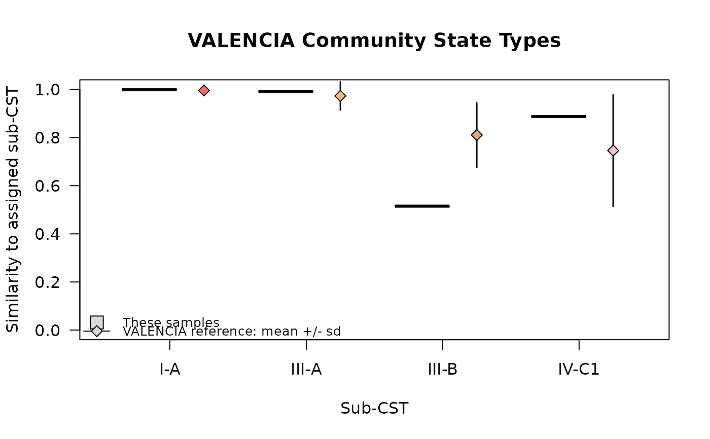

Assigns vaginal microbiome samples to community state types (CSTs) with VALENCIA (France et al. 2020): each sample goes to the most similar of 13 reference centroids (sub-CSTs), by Yue and Clayton's (2005) similarity of relative abundances.
Usage
valencia(
counts,
centroids = valencia_centroids,
totals = NULL,
margin = 1L,
cpus = n_cpus()
)Arguments
- counts
A count table (or relative abundances) whose features are named as VALENCIA names its taxa (see "Taxon names"). Samples are rows unless
margin = 2. A named vector is one sample.- centroids
The reference centroids: a matrix of relative abundances, one row per sub-CST (named in the row names) and one column per taxon (named in the column names). Default: valencia_centroids, VALENCIA's 13 published centroids. A data frame read from VALENCIA's centroids file, whose
sub_CSTcolumn names the rows, is also accepted.- totals
Each sample's total read count, by which its counts are divided, as VALENCIA's
read_countcolumn: a vector with one value per sample (matched by name, or else by position), normally at least the sample's sum (it warns otherwise). DefaultNULLuses each sample's sum. Givetotalswhen reads were left out ofcounts(such as unclassified ones) and VALENCIA would have counted them.- margin
If your samples are in the table's rows, set to
1L(the default). If they are in columns, set to2L.- cpus
How many parallel processing threads to use. Results are the same for any number. Default: all available cores.
Value
A data frame of class
c("ecodive_valencia", "ecodive_types", "data.frame"), one row per
sample (see ecodive_types), with columns:
sample: the sample's name.type: its sub-CST, a factor whose levels are the centroids' names ("I-A"to"V"), in the centroids' order.cst: its CST, a factor (levels"I","II","III","IV-A","IV-B","IV-C","V").score: its similarity to its sub-CST's centroid, from 0 to 1.matched: the proportion of its reads in taxa that the centroids name.
Its attributes:
types: a data frame, one row per sub-CST, withtype,n_samples,top_feature(the centroid's most abundant taxon),cst,score_mean(the mean score of the samples assigned to it), andreference_score_meanandreference_score_sd, VALENCIA's mean and standard deviation of the scores of its reference samples (NAfor centroids of other names).profiles: the centroids, a sub-CSTs \(\times\) taxa matrix.scores: a samples \(\times\) sub-CSTs matrix of every similarity.method:"valencia".
There is no selection: the number of types is fixed by the
centroids. plot() draws the centroids' profiles or the scores (see
plot.ecodive_types()); its title is "VALENCIA Community State Types".
Details
For each sample, the relative abundances \(p\) are its counts divided
by its total. Its similarity to each centroid \(q\) is Yue and
Clayton's \(\theta\), over the union of the sample's and the centroid's
taxa (a taxon missing from either is 0 there):
$$\theta = \frac{\sum p q}{\sum (p - q)^2 + \sum p q}$$
It is 1 when \(p = q\), and 0 when they share no taxa. Taxa that the
centroids don't name still count, through \(\sum p^2\), and lower
every similarity. The sample's sub-CST (type) is the centroid of
largest similarity (the first in the centroids' order, on ties), and its
score is that similarity. Sub-CSTs are then grouped into CSTs (cst):
I-A and I-B into I, III-A and III-B into III, and IV-C0 to IV-C4 into
IV-C.
The community state types (France et al. 2020):
I (I-A, I-B): dominated by Lactobacillus crispatus; almost entirely in I-A, less so in I-B.
II: dominated by L. gasseri.
III (III-A, III-B): dominated by L. iners.
IV-A: high to moderate BVAB1 and Gardnerella vaginalis.
IV-B: high to moderate G. vaginalis and Atopobium vaginae.
IV-C: few Lactobacillus, G. vaginalis or BVAB1: IV-C0, an even community with Prevotella; IV-C1 to IV-C4, dominated by Streptococcus, Enterococcus, Bifidobacterium or Staphylococcus.
V: dominated by L. jensenii.
Scores. VALENCIA's authors compare each sub-CST's scores with those of
their reference samples (the means and standard deviations in the
types attribute, and in plot(x, "scores")): a sample scoring far
below its sub-CST's reference fits it poorly.
Taxon names
Features are matched to the centroids' taxa by their exact names, so
name them as VALENCIA does (see colnames(valencia_centroids)):
species of Lactobacillus, Gardnerella, Prevotella, Atopobium and Sneathia as
Genus_species, such as"Lactobacillus_crispatus","Gardnerella_vaginalis";other taxa summarized to genus, or a higher rank, with a prefix:
"g_Streptococcus","f_Enterobacteriaceae","o_Micrococcales";a few names of their own:
"BVAB1","BVAB2/BVAB3","BVAB_TM7".
Sum features that share a name first (duplicated names are an error).
valencia() warns when counts has none of the taxa that dominate the
centroids (L. crispatus, L. iners, L. gasseri, L. jensenii,
BVAB1, G. vaginalis, and the genera Streptococcus, Enterococcus,
Bifidobacterium and Staphylococcus), since a misnamed one leaves
samples in the wrong type; the matched column shows how much of each
sample was matched. Prevotella species are often named differently:
VALENCIA's authors suggest merging them all into "g_Prevotella", with
centroids merged the same way (centroids). VALENCIA's
convert_qiime.py, which renames QIIME 2 taxonomies, has no equivalent
here.
Differences from Valencia.py
Valencia.py divides counts by a
read_countcolumn, which can exceed the sum of the taxa;valencia()divides by each sample's sum unlesstotalsgives the read counts.A sample of total 0 has
NaNscores in both, and a type ofNAhere, with a warning.A sample that shares no taxa with any centroid scores 0 against all of them. Valencia.py then assigns it to the first, I-A, with score 0;
valencia()does the same, with a warning.The similarities are computed over each sample's non-zero taxa only, as \(\sum pq / (\sum p^2 + \sum q^2 - \sum pq)\), which equals Valencia.py's form to rounding.
References
France, M. T., Ma, B., Gajer, P., Brown, S., Humphrys, M. S., Holm, J. B., Waetjen, L. E., Brotman, R. M., & Ravel, J. (2020). VALENCIA: a nearest centroid classification method for vaginal microbial communities based on composition. Microbiome, 8, 166. doi:10.1186/s40168-020-00934-6
Yue, J. C., & Clayton, M. K. (2005). A similarity measure based on species proportions. Communications in Statistics - Theory and Methods, 34, 2123-2131. doi:10.1080/STA-200066418
Ravel, J., Gajer, P., Abdo, Z., et al. (2011). Vaginal microbiome of reproductive-age women. Proceedings of the National Academy of Sciences, 108, 4680-4687. doi:10.1073/pnas.1002611107
See also
valencia_centroids, ecodive_types, plot.ecodive_types()
Other community types:
dmm(),
enterotype()
Examples
# Read counts of four samples, with VALENCIA's taxon names.
counts <- rbind(
S1 = c(Lactobacillus_crispatus = 9500, Lactobacillus_iners = 300, g_Streptococcus = 200),
S2 = c(Lactobacillus_crispatus = 400, Lactobacillus_iners = 7000, g_Streptococcus = 100),
S3 = c(Lactobacillus_crispatus = 0, Lactobacillus_iners = 50, g_Streptococcus = 9000),
S4 = c(Lactobacillus_crispatus = 3000, Lactobacillus_iners = 3000, g_Streptococcus = 3000) )
counts <- cbind(counts, Gardnerella_vaginalis = c(0, 500, 300, 2000))
# It warns that some of the centroids' key taxa are missing.
vl <- suppressWarnings(valencia(counts))
vl
#> # VALENCIA Community State Types
#> # 4 samples in 13 types (4 with samples)
#> #
#> # Types:
#> type n_samples top_feature cst score_mean reference_score_mean
#> 1 I-A 1 Lactobacillus_crispatus I 0.999 0.996
#> 2 I-B 0 Lactobacillus_crispatus I NA 0.858
#> 3 II 0 Lactobacillus_gasseri II NA 0.812
#> 4 III-A 1 Lactobacillus_iners III 0.991 0.973
#> 5 III-B 1 Lactobacillus_iners III 0.515 0.81
#> 6 IV-A 0 BVAB1 IV-A NA 0.718
#> 7 IV-B 0 Gardnerella_vaginalis IV-B NA 0.66
#> 8 IV-C0 0 g_Corynebacterium_1 IV-C NA 0.321
#> 9 IV-C1 1 g_Streptococcus IV-C 0.887 0.746
#> 10 IV-C2 0 g_Enterococcus IV-C NA 0.695
#> 11 IV-C3 0 g_Bifidobacterium IV-C NA 0.759
#> 12 IV-C4 0 g_Staphylococcus IV-C NA 0.682
#> 13 V 0 Lactobacillus_jensenii V NA 0.735
#> # … 1 more column: reference_score_sd
#> #
#> # Samples: a data.frame: 4 × 5
#> sample type cst score matched
#> <chr> <fct> <fct> <dbl> <dbl>
#> S1 S1 I-A I 0.999 1
#> S2 S2 III-A III 0.991 1
#> S3 S3 IV-C1 IV-C 0.887 1
#> S4 S4 III-B III 0.515 1
#> # Attributes: types, profiles, scores, method
attr(vl, 'scores')
#> I-A I-B II III-A III-B IV-A
#> S1 0.9986468903 0.920354954 0.005918067 0.017722699 0.11670312 0.002921032
#> S2 0.0317946719 0.075688503 0.051866707 0.991134977 0.87494850 0.070117698
#> S3 0.0003976671 0.007477076 0.013651055 0.006261407 0.02019691 0.007885020
#> S4 0.2885594733 0.388919214 0.055775227 0.303409657 0.51508618 0.140631416
#> IV-B IV-C0 IV-C1 IV-C2 IV-C3 IV-C4
#> S1 0.01342171 0.04529555 0.01697272 0.02759495 0.004515339 0.01123020
#> S2 0.15046640 0.08617440 0.02646642 0.01448768 0.002575583 0.13077884
#> S3 0.01871690 0.06373089 0.88744229 0.03088275 0.103064028 0.05715072
#> S4 0.31448127 0.20238474 0.37883579 0.04181806 0.057365295 0.13645033
#> V
#> S1 0.032766661
#> S2 0.253339925
#> S3 0.005227357
#> S4 0.177562519
plot(vl, 'scores')
